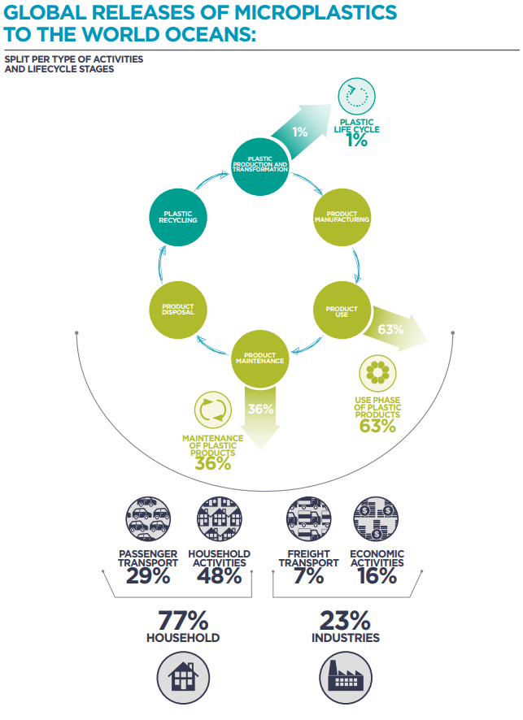

Most plastic entering the ocean originate from land-based sources. Discarded plastic materials enter the marine environment as trash, industrial discharge, or litter through inland waterways, wastewater outflows, and transport by wind and tides. Uncollected waste accounts for 75% of these land-based discharges, while the remaining 25% comes from within the waste management system. Most common plastic types manufactured are polyethylene and polypropylene.
The rate of degradation and persistence of plastics varies by polymer, shape, density, and the purpose of the plastic itself. More buoyant plastics are more likely to be carried by ocean currents and wind across the environment. When exposed to natural forces like sunlight and wave action, plastics will degrade into microplastics.
These include polyamide, polyester, polymerizing vinyl chloride (PVC), and acrylic, among others. Others are lighter than seawater and are often found floating at the surface, including polyethylene, polypropylene, and polystyrene. As plastics progressively degrade, the surface area to volume ratio increases and additive chemicals are expected to leach. Leached chemicals may bioaccumulate in animals from seawater within the same trophic level, and biomagnify up the food chain, since they are fat-soluble.
Plastic polymers can be degraded slowly by microorganisms (e.g., Bacillus cereus, Micrococcus sp., or Corynebacterium), heat, oxidation, light, or hydrolysis.
While some plastics enter oceans from maritime operations, 80% is suspected to originate from land-based sources. Discarded plastic materials enter the marine environment as trash, industrial discharge, or litter through inland waterways, wastewater outflows, and transport by winds or tides.
Over time, plastic particles contaminate the marine ecosystem and food chain, including animals used for human consumption
The image above shows how bioplastic can degrade in nature.
If the lifecycle of plastic products led to less waste, less microplastics would find their way into our environment.
Plants and microorganisms can produce bioplastics, like polylactic acid. Bioplastics have the advantage of being produced from renewable resources (bacteria, plants) rather than nonrenewable resources (oil, natural gas). Furthermore, bioplastics are biodegradable -- they can break down in the environment Bioplastics are expensive to produce now, but may become economically viable in the future. The following are the two known ways to create bioplastics:
Fermentation - Bacteria or other microorganisms mass-produce the biopolymers in bioreactors (fermentation tanks). The biopolymers (lactic acid, polyesters) are extracted from the bioreactors and chemically processed into plastics.
Genetic Engineering - Biotechnologists introduce bacterial genes into plants. These genes code for the enzymes to make bacterial plastics. The plants are grown and harvested, and the plastics are extracted from the plant material.
Waste generation and waste leakage are inextricably linked and proportionally associated with economic development, local infrastructure, and legislation. Companies need to improve their packaging materials to account for the environmental and social cost of synthetic plastics. Consumers can also demand better products, and policymakers can provide the right incentives to encourage companies to innovate in the space of bioplastics.
In addition, companies are finding varieties of bacteria to digest plastic on an industrial scale, and sell the byproducts to companies to make recycling more profitable.